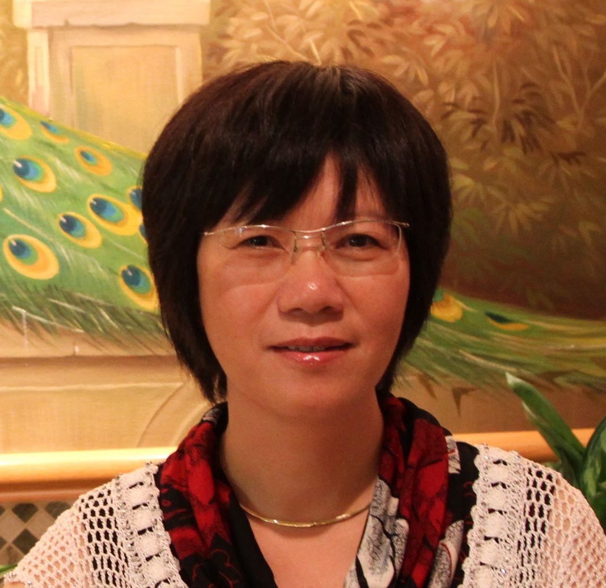

As leaves are to trees, organs are to humans. As the tree gets older, the leaves wither along with it. We suffer
from the same difficulties as human beings, but what if we could aid it with the help of leaves? In Leaves of Life,
a wide variety of herbal medicine choices are offered. Generic medicines are given their individual herbal counter
parts to ease the patients in their search for heap alternatives. Leaves of Life’s priority is to c give a chance to
everyone to bloom once again. The privileged should not only be the ones to have access to medicine, but also
the poor and everyone.
Herbal medicine is the center of complementary and alternative medicine, which has recently gained significant
acceptance worldwide and is progressively making its way into established healthcare systems. HM is used by
people of all genders, social groups, and races in both developing and industrialized nations. This website
features 50 unique herbal medicine alternatives tailored to our specific needs. For example, for stomach ulcers,
instead of antibiotics, ginger based herbal medicines that could help with digestion will be recommended.
Herbal medicine has its origins in ancient cultures. It involves the medicinal use of plants to treat disease and
enhance general health and wellbeing. Some herbs have potent (powerful) ingredients and should be taken with the same
level of caution as pharmaceutical medications. In fact, many pharmaceutical medications are based on man-made versions of
naturally occurring compounds found in plants. For instance, the heart medicine digitalis was derived from the foxglove plant.
Herbal medicines contain active ingredients. The active ingredients of many herbal preparations are as yet unknown. Some
pharmaceutical medications are based on a single active ingredient derived from a plant source. Practitioners of herbal
medicine believe that an active ingredient can lose its impact or become less safe if used in isolation from the rest
of the plant.
The purpose of this website is for users to know how good herbal medicines are for preventing illnesses and diseases. Herbal medicines nowadays are often overlooked, as they are sometimes preferred to as placebo and fake medicines. Luckily enough, the herbal medicine scene in the Philippines is somewhat better compared to other countries, and it is a good starting point when introducing research based, herbal alternatives. Leaves of Life will acknowledge the different types of herbal medicines and supplements that can easily be considered as counterparts of prescription medicines. Users can have access to all possible alternatives, based on their diagnosis and needs. Most of the herbal medicines that this website presents are easy to be planted and grown in our own households. One of the main purposes of Leaves of Life is to guide people on which plants they should grow and how they could grow them. Lastly, Leaves of Life also wants people who are financially challenged to be able to look for cheaper alternatives and avoid expensive medicines in the pharmacy. This allows them to make the most out of their money and prevent overspending on unnecessarily priced medicines.
|

Dr. Qiuyun (Jenny) Xiang |
David Bellamy |
María Alejandra Gandolfo-Nixon |